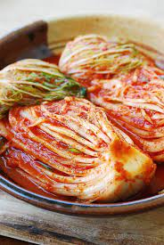

How to make kimchi
Ingredients
- Napa Cabbage
- Gochujung
- Gochujaru
- Green Onion
- Brown Onion
- Garlic
- KosherSalt
- Sweet Rice Flour
- Fish Sauce
- Ginger
- Fermented Salted Shrimp
Other tools
- Cutting Board
- Cutting Knife
- Air-tight Large Jar
- Bowl for rinsing
- Bowl for draining water
- Mixing Spoon
Step-by-Step
Part 1: Preparing the Napa Cabbage
- Cut up the Napa Cabbage into quarters vertically and then cut them into smaller chunks horizontally. discard the stem parts and wash the leaves. After washing and draining the leaves, set them inside a large bowl. .
- Lather the leaves in salt and let them rest for 2 hours
- After 2 hours, wash the cabbage again under culd water to remove remaining salt and dirt. Drain the water
Part 2: Preparing the Porridge Mix
- Combine water and sweet rice flour> in a small pot to mix with a wooden spoon.
- Cook for 10 minutes on medium heat until it starts to bubble. Add sugar and cook for 1 more minute
- Pour porridge into a large mixing bowl and add garlic, ginger, onion, fish sauce, fermented salted shrimp, and hot pepper flakes.
- Mix until it turns into a thin paste
\
- Add Radish, Carrot, and Green Onion
Part 3: Putting it all together
- In a large bowl, spread the paste over each cabbage leaf
- Place all the lathered leaves into a jar
- Allow the jar to sit a few days to ferment
- Place in refrigerator after the fermentation as needed to slow down the fermentation process
Back